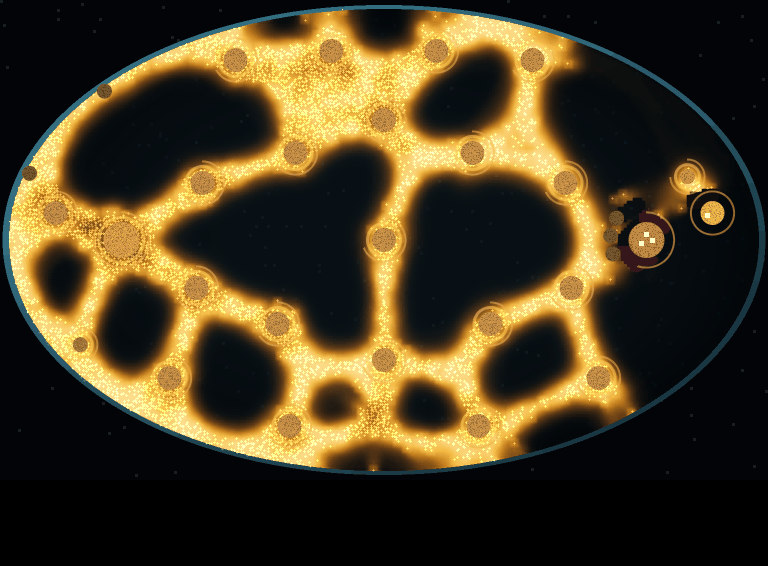
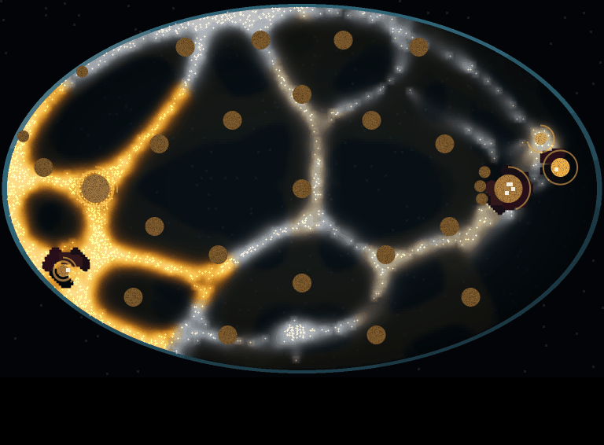
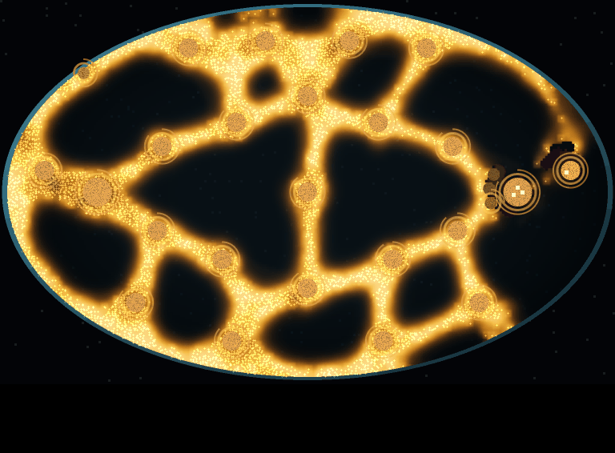
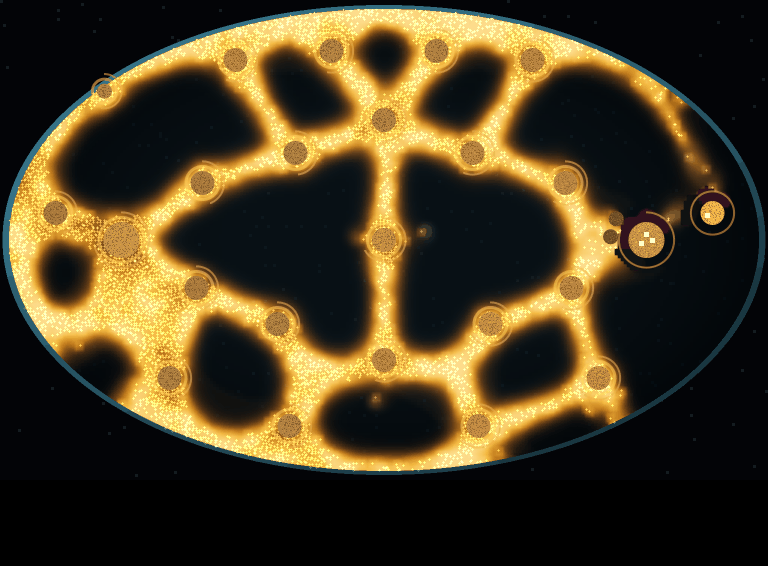
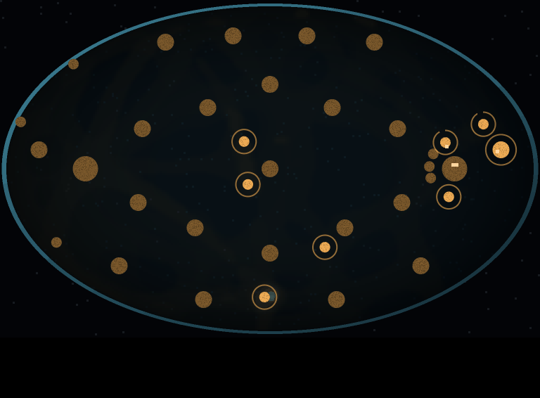
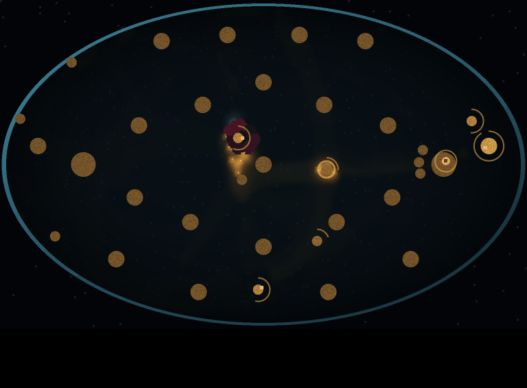

<title>Larder M2 Census</title>
<meta name="claude:viewport-fit-sides" content="cover">
<link rel="stylesheet" href="https://fonts.googleapis.com/css2?family=Space+Grotesk:wght@500;700&family=Inter:wght@400;600&family=JetBrains+Mono:wght@400&display=swap">
<style>
/* Layout: one reading column; pictures in pairs (fed | lean), counts under each pair. */
:root {
  --bg: #f5f4ef; --fg: #1d1f1a; --muted: #5f6458; --line: #d9d8cf; --gold: #a4700f; --pale: #5b7a8c; --bad: #a33a2a;
  --display: "Space Grotesk", system-ui, sans-serif; --body: "Inter", system-ui, sans-serif; --mono: "JetBrains Mono", ui-monospace, monospace;
}
@media (prefers-color-scheme: dark) { :root:not([data-theme="light"]) { --bg: #12140f; --fg: #e6e5dc; --muted: #9da293; --line: #2e3229; --gold: #e2ab3f; --pale: #9fc0d2; --bad: #e07a66; color-scheme: dark } }
:root[data-theme="dark"] { --bg: #12140f; --fg: #e6e5dc; --muted: #9da293; --line: #2e3229; --gold: #e2ab3f; --pale: #9fc0d2; --bad: #e07a66; color-scheme: dark }
body { background: var(--bg); color: var(--fg); font-family: var(--body); font-size: 15px; line-height: 1.55;
  padding-left: max(16px, env(safe-area-inset-left, 0px)); padding-right: max(16px, env(safe-area-inset-right, 0px)); padding-block: 28px 48px; }
main { max-width: 980px; margin: 0 auto; display: flex; flex-direction: column; gap: 28px; }
h1, h2 { font-family: var(--display); text-wrap: balance; margin: 0; }
h1 { font-size: 1.9rem; }
h2 { font-size: 1.25rem; }
p { margin: 0; max-width: 68ch; }
.verdict { border-left: 4px solid var(--bad); padding: 4px 0 4px 14px; }
.pair { display: grid; grid-template-columns: 1fr 1fr; gap: 12px; }
@media (max-width: 640px) { .pair { grid-template-columns: 1fr; } }
figure { margin: 0; display: flex; flex-direction: column; gap: 6px; min-width: 0; }
figure img { width: 100%; border-radius: 4px; display: block; }
figcaption { font-size: 0.85rem; color: var(--muted); }
figcaption b { color: var(--fg); }
.wrap { overflow-x: auto; }
table { border-collapse: collapse; font-variant-numeric: tabular-nums; font-size: 0.9rem; min-width: 560px; width: 100%; }
th, td { text-align: left; padding: 6px 10px; border-bottom: 1px solid var(--line); }
th { font-family: var(--display); font-weight: 500; color: var(--muted); }
td.n { font-family: var(--mono); }
.fed { color: var(--gold); } .lean { color: var(--pale); }
section { display: flex; flex-direction: column; gap: 12px; }
small { color: var(--muted); }
</style>
<main>
  <header style="display:flex;flex-direction:column;gap:10px">
    <h1>Larder M2: spending, and the mould's answers</h1>
    <p>Held-out seeds 17-32. The squad can now buy soldiers (400), lay bait and build turrets (600). The mould answers three ways: the larder smells of your bank, a starving mould hits harder, and food drops land every minute until 10:00. Two fields: <b class="fed">fed</b> (every pile full) and <b class="lean">lean</b> (every pile but the larder at a quarter).</p>
    <p class="verdict"><b>The gate fails.</b> No plan changes winner between the two fields. One plan, bait the mould away from the larder, farm three piles, then expand once the mould is small, is best on 13 of 16 fed seeds and 12 of 16 lean ones. It is still a ladder.</p>
  </header>

  <section>
    <h2>Same plan, two fields, at 5:00 (seed 17, the reader)</h2>
    <div class="pair">
      <figure><figcaption><b class="fed">Fed.</b> A gold mesh over every pile. Ends at the cap, score −0.13, 8 soldiers alive, 2,441 walkers left.</figcaption></figure>
      <figure><figcaption><b class="lean">Lean.</b> Thin and pale away from home: starving. Ends at the cap, score 0.33, with 10 walkers left that it never hunted.</figcaption></figure>
    </div>
    <p>The two fields look alike at 2:00 (6,300 to 7,100 walkers in both) and plainly different by 5:00. That difference is what a player could read. The plans do not yet need to read it: the same plan wins both.</p>
    <div class="pair">
      <figure><figcaption><b class="fed">Fed, 2:00.</b> 6,518 walkers.</figcaption></figure>
      <figure><figcaption><b class="lean">Lean, 2:00.</b> 6,461 walkers.</figcaption></figure>
    </div>
  </section>

  <section>
    <h2>Lean field, seed 17: waiting beats reading</h2>
    <div class="pair">
      <figure><figcaption><b>Baiter, end (10:00).</b> Mould wiped, score 1.43, all 4 soldiers alive.</figcaption></figure>
      <figure><figcaption><b>Reader, end (15:00 cap).</b> Score 0.33: a 10-walker remnant survives.</figcaption></figure>
    </div>
    <p>Once the drops stop at 10:00, a lean mould starves on its own. With drops switched off it starved to death on 16 of 16 seeds for both plans.</p>
  </section>

  <section>
    <h2>The census, seeds 17-32</h2>
    <div class="wrap"><table>
      <thead><tr><th>Plan</th><th class="fed">Fed median</th><th>Fed ends</th><th class="lean">Lean median</th><th>Lean ends</th></tr></thead>
      <tbody>
        <tr><td>Idle</td><td class="n">−1.812</td><td>squad wiped 16</td><td class="n">−1.816</td><td>squad wiped 16</td></tr>
        <tr><td>Random (spend-matched)</td><td class="n">−1.913</td><td>squad wiped 16</td><td class="n">−1.914</td><td>squad wiped 16</td></tr>
        <tr><td>Fortress (ring + turrets)</td><td class="n">−1.835</td><td>squad wiped 16</td><td class="n">−1.845</td><td>squad wiped 16</td></tr>
        <tr><td>Farmer (buys to 8)</td><td class="n">−1.419</td><td>cap 4, wiped 12</td><td class="n">−1.665</td><td>won 1, cap 3, wiped 12</td></tr>
        <tr><td>Hunter</td><td class="n">−1.950</td><td>wiped 16 at 45 s</td><td class="n">−1.951</td><td>wiped 16 at 45 s</td></tr>
        <tr><td>Baiter</td><td class="n">−0.333</td><td>cap 16</td><td class="n">0.167</td><td>won 5, cap 9, wiped 2</td></tr>
        <tr><td>Reader</td><td class="n">−0.300</td><td>cap 16</td><td class="n">1.459</td><td>won 11, cap 5</td></tr>
      </tbody>
    </table></div>
    <small>Score: a win is above 1, the 15-minute cap is −0.5 to 0.5 by share of piles held, a loss is below −1. Reader against farmer (fed) 13 of 16, p 0.021; reader against baiter (lean) 12 of 16, p 0.077; neither survives Holm over 24. Everything else the reader plays it beats on 16 of 16, or 8 of 8 with 8 ties.</small>
  </section>

  <section>
    <h2>Each answer switched off</h2>
    <div class="wrap"><table>
      <thead><tr><th>Switched off</th><th>Reader fed</th><th>Reader lean</th><th>Baiter fed</th><th>Baiter lean</th><th>What changed</th></tr></thead>
      <tbody>
        <tr><td>Nothing</td><td class="n">−0.300</td><td class="n">1.459</td><td class="n">−0.333</td><td class="n">0.167</td><td></td></tr>
        <tr><td>Hoard smell</td><td class="n">0.167</td><td class="n">1.411</td><td class="n">−0.167</td><td class="n">0.167</td><td>Saving stops costing: fed reader beats farmer 16 of 16</td></tr>
        <tr><td>Hunger</td><td class="n">−0.300</td><td class="n">1.434</td><td class="n">−0.333</td><td class="n">0.500</td><td>Barely acts: a fed mould is never hungry</td></tr>
        <tr><td>Drops</td><td class="n">−0.333</td><td class="n">1.565</td><td class="n">−0.333</td><td class="n">1.470</td><td>Lean mould starves to death 16 of 16</td></tr>
      </tbody>
    </table></div>
  </section>

  <section>
    <h2>Next</h2>
    <p>The plan's rule when one plan dominates is to give the mould one more answer. The candidate: a starving mould sends spores to start new colonies at far piles, which you would see happen. Waiting would then lose against a lean mould and attacking it early would pay, while a fed mould stays too big to attack, so baiting still wins there. That is the crossover the gate asks for.</p>
  </section>
</main>
